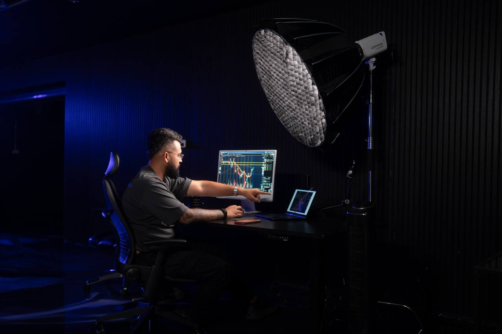

About
Full-time day trader. Founder of Kay Capitals University. No finance degree, no Wall Street connections, no trust fund. Just screen time, discipline, and an obsession with the markets.
I started trading over seven years ago with money I couldn't afford to lose. I blew accounts. I made every mistake in the book. But I kept showing up, kept studying, kept refining my process.
Eventually, the losses turned into lessons and the lessons turned into consistency. I went full-time and never looked back. Today I trade US stock market options — SPY, QQQ, NVDA, TSLA, AAPL — every single market day from the Gold Coast, Australia.
I don't believe in get-rich-quick. I believe in get-rich-disciplined. My approach is built on:
When I hit 1M followers on Instagram, I realised something: most trading "education" online is garbage. Flashy cars, rented lifestyles, zero substance. I wanted to build the mentorship program I wish I had when I started.
Kay Capitals University is built on accountability, real strategy, and a community of traders who actually give a damn about getting better. No hype. No shortcuts. Just the work.
Featured in publications and podcasts across the finance and entrepreneurship space.